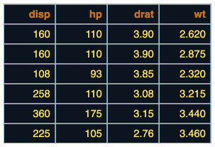

| align {flextable} | R Documentation |
change text alignment of selected rows and columns of a flextable.
align(x, i = NULL, j = NULL, align = "left", part = "body") align_text_col(x, align = "left", header = TRUE, footer = TRUE) align_nottext_col(x, align = "right", header = TRUE, footer = TRUE)
x |
a flextable object |
i |
rows selection |
j |
columns selection |
align |
text alignment - a single character value, expected value is one of 'left', 'right', 'center', 'justify'. |
part |
partname of the table (one of 'all', 'body', 'header', 'footer') |
header |
should the header be aligned with the body |
footer |
should the footer be aligned with the body |

Other sugar functions for table style:
bg(),
bold(),
color(),
empty_blanks(),
fontsize(),
font(),
highlight(),
italic(),
line_spacing(),
padding(),
rotate(),
valign()
ft <- flextable(head(mtcars)[,3:6]) ft <- align(ft, align = "right", part = "all") ft <- theme_tron_legacy(ft) ft ftab <- flextable(mtcars) ftab <- align_text_col(ftab, align = "left") ftab <- align_nottext_col(ftab, align = "right") ftab